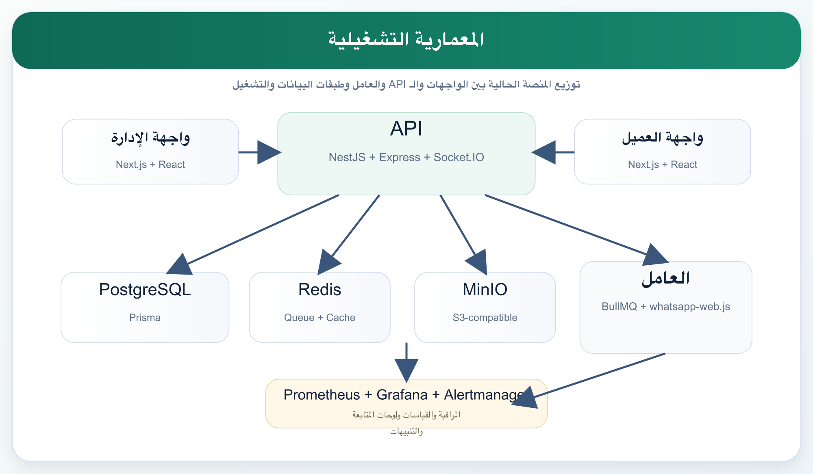
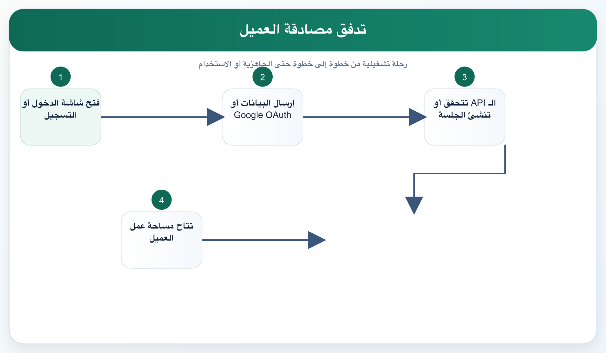
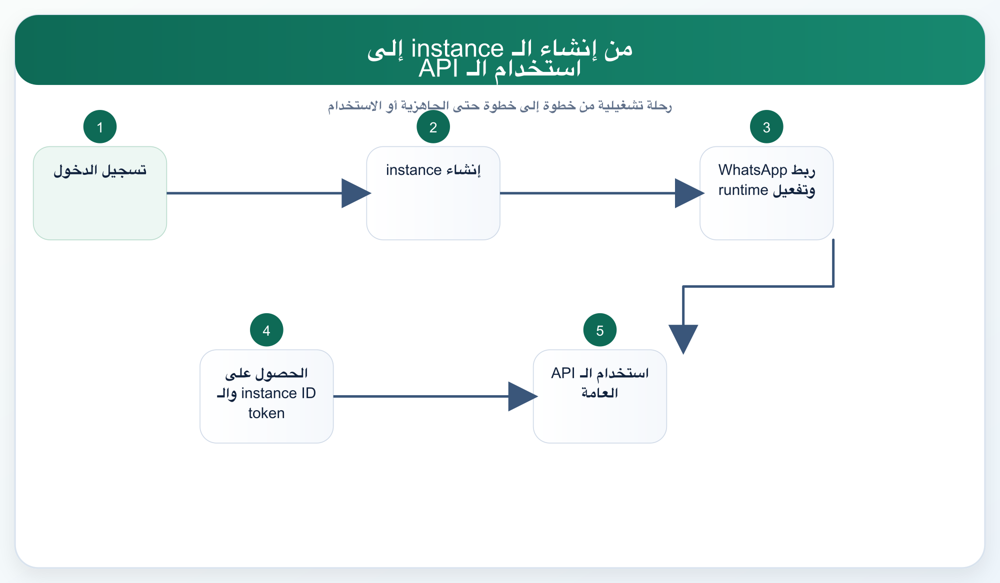
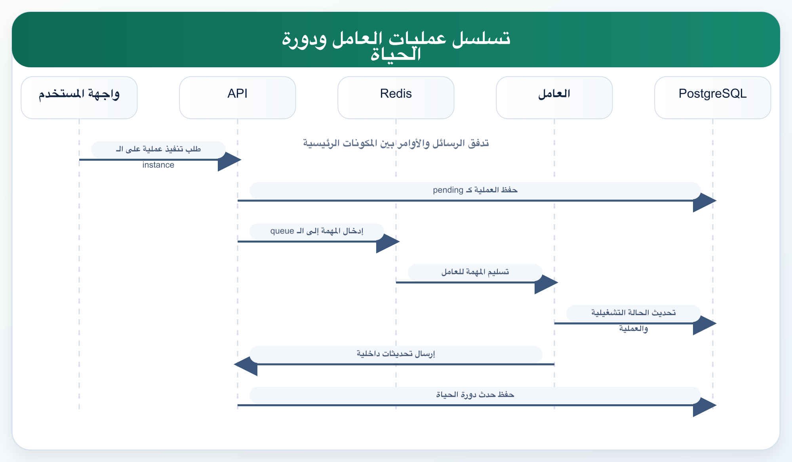
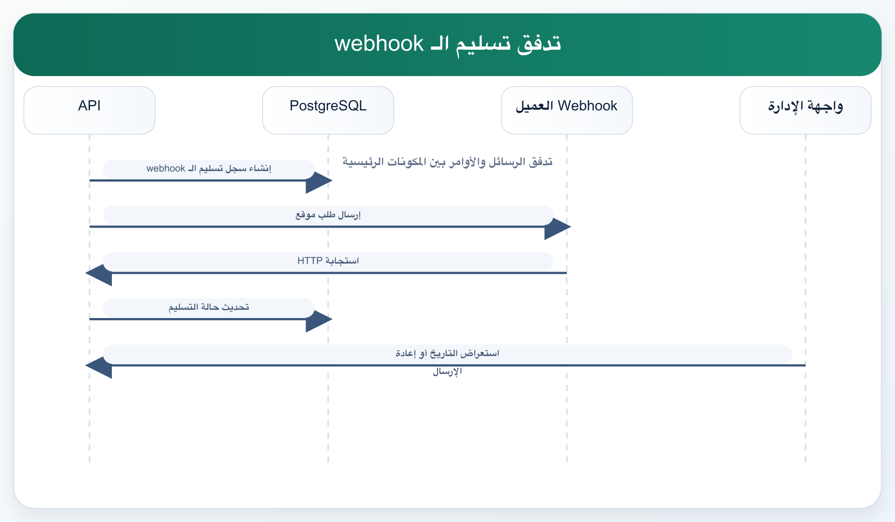

توثيق المنتج والتصميم
وثيقة معمارية النظام
يمتلك النظام بنية مؤلفة من أربع تطبيقات تشغيلية رئيسية:
Customer WebAdmin WebAPIWorker
ويرتكز على الحزم المشتركة التالية:
packages/configpackages/contractspackages/dbpackages/ui
مخطط المعمارية التشغيلية

التصميم عالي المستوى HLD
يوزّع النظام المسؤوليات على ثلاث طبقات رئيسية:
- واجهات الاستخدام: العميل والإدارة
- طبقة التحكم: API
- طبقة التنفيذ: worker + queue + runtime
كما توجد نطاقات بيانات رئيسية:
- الهوية والوصول
- المستأجرون ومساحات العمل
- الـ instances والحالة التشغيلية
- الرسائل والتسليمات
- الدعم والتدقيق والعاملون
التصميم منخفض المستوى LLD
تطبيق العميل
المسارات الحالية تشمل:
//signup/messages/settings/subscription/api-documents/instances/[id]/auth/google
تطبيق الإدارة
المسارات الحالية تشمل:
//messages/users/workspaces/workers/workers/[id]/instances/[id]/support/audit
الـ API
تتضمن:
- مسارات
auth - مسارات
customer - مسارات
admin - مسارات
internal - مسارات
instanceالعامة /healthو/readyو/metrics
توثيق مخطط قاعدة البيانات
تستخدم المنصة PostgreSQL مع Prisma 7.
الكيانات الأساسية:
UserWorkspaceMembershipRefreshSessionApiTokenInstanceInstanceSettingsInstanceRuntimeStateInstanceOperationInstanceLifecycleEventOutboundMessageOutboundMessageAttemptInboundMessageWebhookDeliveryWorkerHeartbeatAuditLogSupportCase
ملاحظات تصميمية
- يتم حفظ الـ tokens بشكل Hash مع Prefix للعرض
- لكل instance معرف داخلي ومعرف عام للاستخدام البرمجي
- حالة التشغيل منفصلة عن بيانات الـ instance الأساسية
- سجلات التدقيق والدعم كيانات مستقلة وليست ملاحظات حرة فقط
تصميم الـ API ومواصفاته
الواجهة تعتمد على:
HTTP/JSON- إصدار
v1 - فصل واضح بين مسارات العميل والإدارة والداخلية والعامة
أنماط المصادقة الحالية:
- جلسات dashboard
- Google OAuth للعملاء
- MFA للإدارة
- account tokens
- instance tokens
توثيق UI/UX
الاتجاه الحالي للتجربة:
- Light theme أولاً
- فصل بصري واضح بين العميل والإدارة
- Sidebar + Topbar للمسارات المصادق عليها
- صفحات استكشاف وتشغيل قابلة للمسح السريع
- شاشات signin/signup حديثة مع validation ومساعدة سياقية
Wireframes و Mockups
بنية صفحة تسجيل الدخول للعميل
+--------------------------------------------------------------+
| Brand / topbar |
+----------------------------+---------------------------------+
| Visual brand panel | Signin form card |
| | email / password / Google |
| | help / submit |
+----------------------------+---------------------------------+بنية لوحة العميل
+-------------------+------------------------------------------+
| Sidebar | Sticky topbar |
| routes +------------------------------------------+
| workspace | breadcrumb / page title |
| account chips +------------------------------------------+
| | dashboard cards / explorers / detail |
+-------------------+------------------------------------------+المخططات الانسيابية وتسلسل العمليات
تدفق مصادقة العميل

من إنشاء الـ instance إلى استخدام الـ API

تسلسل عمليات الـ worker ودورة الحياة

تدفق تسليم الـ webhook
